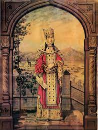
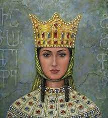

Գործունեություն
Թամարի հայրը՝ Գեորգի III-ը (թագավորել է 1156–84 թթ.-ին), 1178 թ.-ին նրան նշանակել է գահակից։ Ինքնուրույն գահակալել է հոր մահից (1184 թ.) հետո։ Գահակալության առաջին տարիներին ֆեոդալական ավագանին հանդես է եկել թագավորական իշխանության սահմանափակելու պահանջով։ Թագուհին թեև պահպանել է օրենսդրական և գործադիր իրավունքները, սակայն զրկվել է պետական հարցերը միանձնյա լուծելու հնարավորությունից։ Թամարի օրոք վրացական պետությունը հասել է իր հզորության ու ծաղկման գագաթնակետին։ Պետության և անձամբ թագուհու նեցուկն են դարձել Սարգիս Զաքարյանը և նրա որդիներ Զաքարե Բ-ն ու Իվանե Ա-ն։ Վերջիններս ազատագրելով Հայաստանի Բագրատունիների թագավորության տարածքը ստեղծեցին Զաքարյան Հայաստանը և պետական ունիայով գործակցեցին Թամար թագուհու գլխավորած Վրաստանի պետության հետ՝ ստանձնելով այդ երկրի բարձրագույն ռազմա-քաղաքական պաշտոնները։ Նրանք գլխավորել են պայքարը կենտրոնախույս ավագանու և արտաքին թշնամիների դեմ։ 1195 թ.-ին վրացական և հայկական զորքերը՝ Զաքարե Բ Մեծի հրամանատարությամբ, Շամխորի ճակատամարտում պարտության են մատնել Ատրպատականի աթաբեկ Աբուբեքիրին և նրա դաշնակիցներին։ Հաջողությամբ են պսակվել նաև Թամարի ռազմական արշավանքները Սև ծովի առափնյա շրջան (որտեղ 1204 թ.-ին հիմնադրվել էր Տրապիզոնի կայսրությունը), Խլաթի սուլթանության՝ Շահ-Արմենների դեմ և Ատրպատականի ու Պարսկաստանի խորքերը (1210 թ.)։ Վրաստանի վասալ են դարձել Գանձակի և Էրզրումի ամիրները, Երզնկայի և Խլաթի սուլթանները, հյուսիսկովկասյան լեռնականների տիրակալները։ Վրաստանը Թամար թագուհու կառավարման ավարտին Զաքարե Բ Մեծի մղած պատերազմների շնորհիվ ազատագրվել է Հյուսիս-արևելյան Հայաստանը, կազմավորվել և հզորացել է Զաքարյանների իշխանապետությունը։ Իվանե Ա-ն ճնշել է կովկասյան լեռնականների ապստամբությունը Թամարի դաժան հարկային քաղաքականության դեմ։ Թամարի թագավորության տարիները Վրաստանում և Հայաստանում նշանավորվել են շինարարական ծավալուն գործունեությամբ, մշակույթի առաջնթացով։ Թամարը 1185 թ.-ին ամուսնացել է Վլադիմիր-Սուզդալյան իշխան Անդրեյ Բոգոլյուբսկու որդու՝ Յուրիի (Գեորգի) հետ, երկրորդ անգամ՝ 1189 թ.-ին՝ ալանների արքայորդի Դավիթ Սոսլանի (մահացել է 1207 թ.-ին) հետ։ Թամար թագուհուն է նվիրված Շոթա Ռուսթավելու «Ընձենավորը» պոեմը։ Նրա կերպարին անդրադարձել է Ալեքսանդր Վերմիշևը՝ «Ամիրսպասալարը» վեպում։ Վրաց և ռուսաց եկեղեցիները Թամար թագուհուն կարգել են սրբերի դասը՝ որպես տոնելի սուրբ։ 1917 թ.-ից վրաց եկեղեցին ամեն տարի մայիսին նշում է սբ Թամարի տոնը՝ Թամարոբան։ Ախալցխայում կանգնեցվել է Թամար թագուհու հուշարձանը։

Ծնվել է՝ 1166 Ծննդավայր Մցխեթ, Վրաստան Մահացել է՝ հունվարի 18, 1213 Վախճանի վայր Տաբախմելա Գելաթի վանք Երկիր Վրաց թագավորություն Տոհմ Բագրատիոնիներ քաղաքական գործիչ Հայր Գեորգի III[1][2] Մայր Բուրդուխան[1] Երեխաներ Գեորգի VI Լաշա և Ռուսուդան Հավատք Վրաց ուղղափառ եկեղեցի
